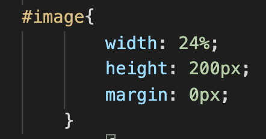

<br>
Задает стилевой идентификатор — уникальное имя элемента, которое используется для изменения его стиля и обращения к нему через скрипты. Идентификатор в коде документа должен быть в единственном экземпляре, иными словами, встречаться только один раз.